Você nunca mais começa do zero.
10 temas em alta por semana, já com o olhar do conteúdo cristão.
Ver como éFechar
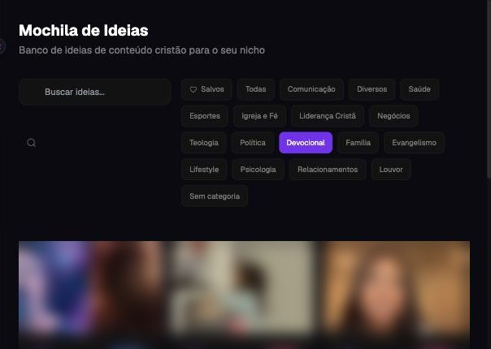
Na plataformaMochila de Ideias
Você prega, ensina, aconselha. Mas na hora de postar, trava. A Legacy IA te dá o caminho: o que falar, um jeito de ensinar que prende e o carrossel pronto.
Veja a Legacy IA funcionando, do tema do dia ao carrossel pronto.
Te diz o que falar. 10 temas em alta por semana, com o olhar cristão.
Escreve com você. Roteiro que ensina e carrossel pronto, na sua linguagem.
No seu ritmo. Uma plataforma para usar sozinho, quando quiser.
No púlpito, no consultório, na empresa, a sua palavra tem peso. Mas quando você tenta levar essa mensagem para o Instagram, a história é outra:
“O que eu falo hoje?”
Você abre o celular para postar, e trava. Para quem? De que jeito?“Comecei uma série e parei na terceira semana.”
A vontade existe. O que falta é um caminho que sustente a constância.“Paguei um curso que não fala a minha língua.”
Feito para outro público, com outros valores. Você não sabe como levar aquilo para a sua mensagem.“A IA tirou a essência da minha mensagem.”
O texto sai bonito, mas não parece você. E não fala com quem te acompanha.“Será que o digital não é para mim?”
Você não precisa virar personagem. Precisa de ideia na hora certa, de um jeito de ensinar que prende, e de constância.
Que querem levar a palavra além do púlpito, com constância e sem perder a essência.
Que querem ensinar o que sabem e gerar confiança em quem precisa da sua ajuda.
Que querem transformar o que ensinam em conteúdo que forma, prende e marca.
Você não precisa dominar tecnologia, escrever bem ou entender de algoritmo. A Legacy te entrega o caminho, os modelos e as ferramentas. Você entra com a mensagem e adapta tudo à sua essência.
10 temas em alta por semana, já com o olhar do conteúdo cristão.

Cinco perguntas e o retrato de quem você ajuda: dores, desejos e as palavras que essa pessoa usa.
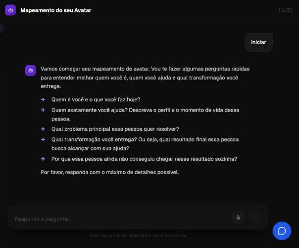
Você pede, e recebe o roteiro pronto: do gancho à lição, na sua linguagem.
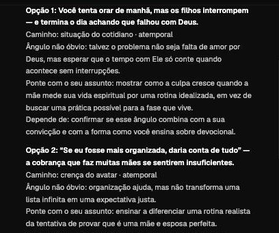
Do texto de cada lâmina ao modelo com as suas fotos, pronto para postar.
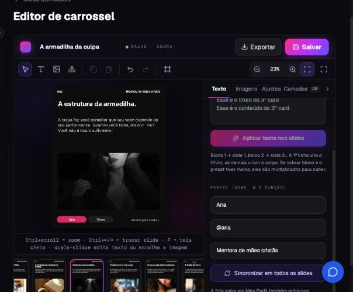
Da ideia ao post publicado, num quadro só. Nada fica pela metade.
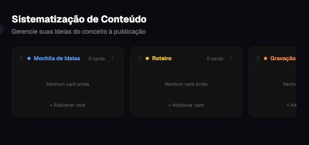
As aulas mostram o porquê de cada passo. No seu ritmo, sem depender de ninguém.
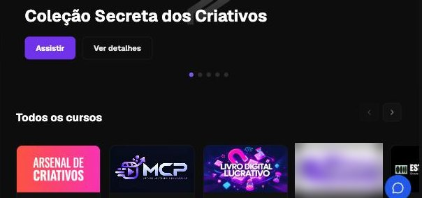
A gente fez o teste com uma criadora de exemplo, a Ana, mentora de mães cristãs. Veja, passo a passo, o que a Legacy fez com ela.
Cinco perguntas, uma de cada vez, do jeito dela. Daí sai o retrato de quem ela ajuda, em 10 partes.
Toda semana chegam notícias e temas em alta, já com o olhar cristão. Ela escolhe um e manda para a produção.
Ideias reais da Mochila, com o olhar cristão
Uma frase, do jeito que ela falaria. O agente devolve o ângulo, os ganchos e o roteiro em etapas, na linguagem do público dela.
Você tenta orar de manhã, mas os filhos interrompem, e termina o dia achando que falhou com Deus.
O briefing, as 10 etapas do Formato Pedagógico de Conteúdo, do gancho ao fechamento, e a explicação de cada uma. Ela entende o porquê de cada parte, e aprende enquanto faz.
Capturar atenção nos primeiros 0,5 segundos com um estímulo visual forte.
Você diante da câmera, com a Bíblia aberta ao lado dos brinquedos das crianças.
Dizer na tela, em poucas palavras, por que vale ficar.
Seu devocional precisa ser perfeito?
A primeira frase dita: curta, direta e com tensão.
Se você tem filhos pequenos, talvez precise parar de esperar pela manhã perfeita para ter tempo com Deus.
Abrir uma pergunta que só o resto do vídeo responde.
Existe um motivo para a culpa chegar justo na hora em que você tenta orar.
Uma cena real que o público reconhece na hora.
Você acorda cedo para orar, o bebê chora, o café queima, e o dia começa com a sensação de que falhou com Deus.
Ligar a história ao problema de quem assiste.
Assim como você não ama menos seus filhos nos dias corridos, Deus não te ama menos no dia em que você só consegue um minuto.
A base que sustenta o que você ensina.
“Vinde a mim, todos os que estais cansados” (Mateus 11:28). O convite é para quem está cansado, não para quem está pronto.
A lição que fica, em uma frase.
Deus não te chamou para ser perfeita. Te chamou para ser dependente.
Mostrar por que você pode ensinar isso.
Há 10 anos no ministério de mulheres, vejo isso toda semana: a culpa diminui quando a rotina fica simples.
O próximo passo claro para quem assistiu.
Salve este vídeo e comente “UM MINUTO” que eu te mando um devocional de 1 minuto para mães.
Ela diz o tema, escolhe a capa entre cinco opções, confere o texto de cada lâmina e exporta com as fotos. Em poucos minutos.
“Por que a sua culpa não é falta de disciplina, mas uma armadilha espiritual.”
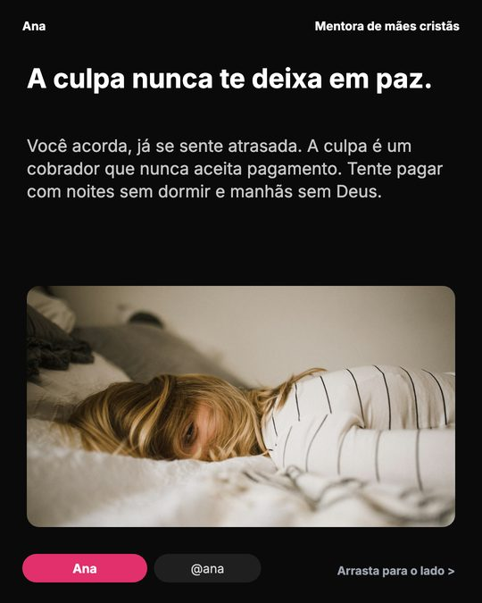
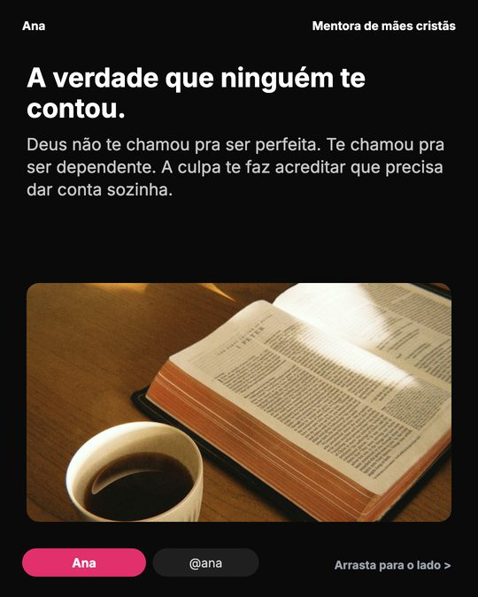
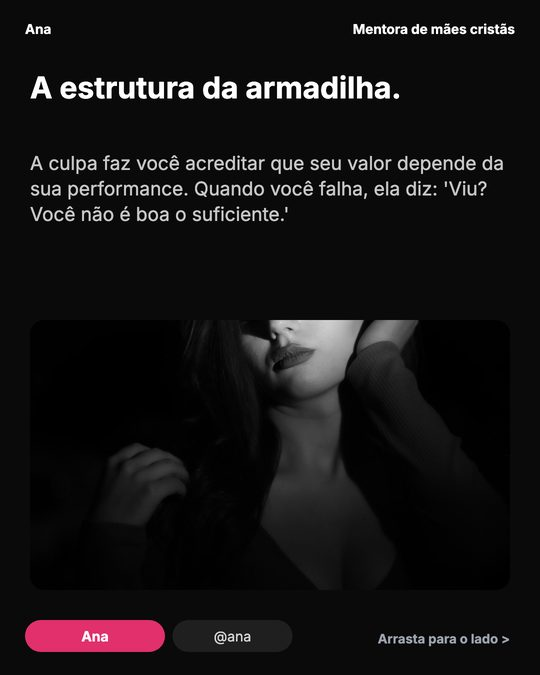
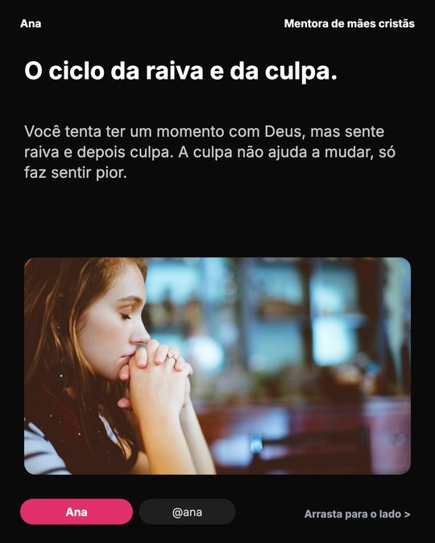
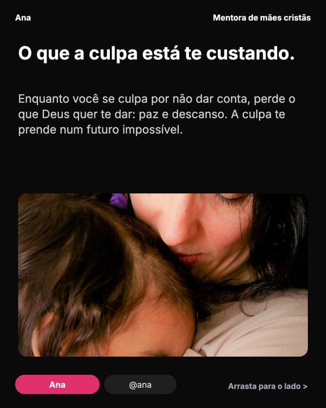
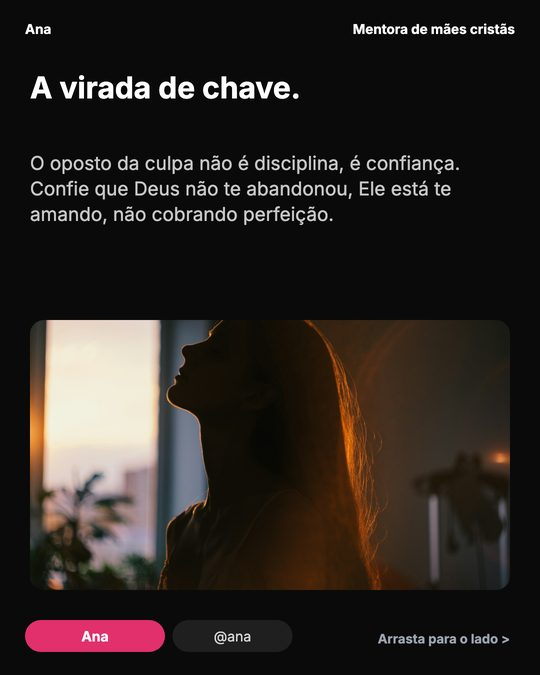
Exemplo feito na própria Legacy IA, com uma pessoa fictícia (“Ana”, mentora de mães cristãs). Os textos das cenas são os do teste; as ideias da Mochila são reais, da própria plataforma (mudam toda semana). O carrossel “A armadilha da culpa” foi exportado da plataforma.
Você ensina com texto e imagem, no seu tempo. Veja carrosséis reais de quem aplica o método da Promov:
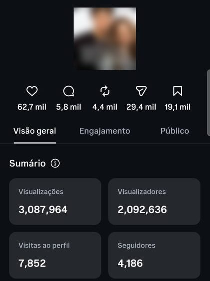
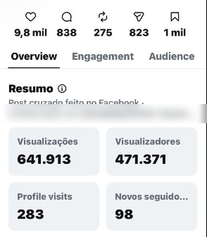
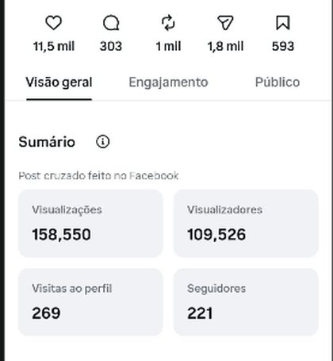
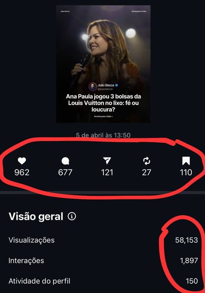
Prints reais do Instagram, de quem aplica o método da Promov (resultado do método, não da plataforma sozinha). A capa do primeiro foi borrada porque fala de outra pessoa; no segundo, os perfis da colaboração.
Para variar a gravação sem perder o método, e para você entender o porquê de cada passo.
Mentorados da Promov que aplicaram o mesmo método de conteúdo que você usa na plataforma.
A Promov já ajudou a impulsionar centenas de perfis pequenos, de diversos nichos: psiquiatria, pastores, finanças, moda, terapeutas, desenvolvimento pessoal.

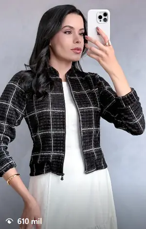
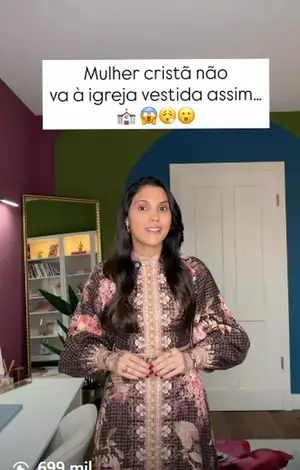
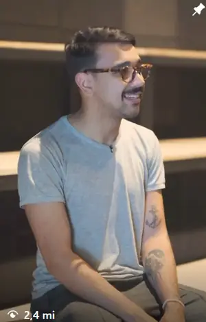
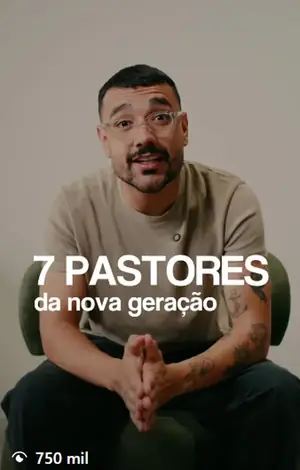
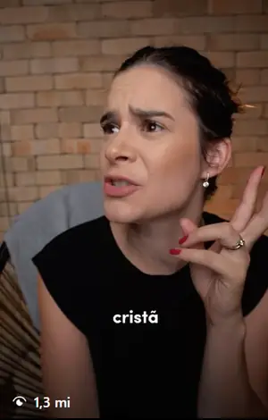
Resultados da mentoria e do método da Promov, não da plataforma sozinha. Os números são os dos próprios prints: o antes, de quando começaram; o depois, o perfil atual.
Sozinho, você trava. Com IA e Canva, a mensagem perde a essência. Com designer ou agência, você explica tudo de novo e espera na fila.
| O que você ganha | LLegacy IA | Sozinho | IA + Canva | Designer | Agência |
|---|---|---|---|---|---|
| Você sabe o que postar | ✓temas em alta toda semana | ✕ | ideias genéricas | ✕faz a arte do que você pedir | se você passar o briefing |
| Fala a língua do público cristão | ✓ | ✓ | só se você explicar toda vez | depende da pessoa | depende da equipe |
| Conteúdo que ensina, com método | ✓ | ✕ | se você souber pedir | ✕o texto é seu | depende da equipe |
| Continua sendo a sua voz | ✓ | ✓ | ✕troca as suas palavras | ✓usa o seu texto | muitas vezes, não |
| Constância sem depender de ninguém | ✓ | ✕ | ✕prazo e fila | ✕prazo e fila | |
| Faz e posta por você | ✕quem posta é você | ✕ | ✕ | faz a arte, não posta | ✓ |
| Quanto custa | Assinatura anualcondição com quem te enviou | R$ 0e o seu tempo, travado | ≈ R$ 135 por mêsIA ≈ R$ 100 + Canva R$ 35 · ≈ R$ 1.490 por ano | a partir de R$ 50 por carrossel2 por semana ≈ R$ 4.800 por ano | a partir de R$ 2 mil por mês≈ R$ 24 mil por ano, anúncios à parte |
Não posta por você. Quem faz e posta é você, com a ideia, o caminho e as palavras na mão.
Não edita os seus vídeos, não agenda posts e não responde a sua audiência.
Não tem acompanhamento nem consultoria. É uma plataforma para você usar sozinho, no seu ritmo, quando quiser.
Não promete números. O que muda a sua presença é a constância e a aplicação do método.
Funciona. A Legacy foi feita para quem tem a mensagem, não para quem domina tecnologia. Ela pergunta, propõe e escreve com você, em linguagem simples, e as aulas mostram o porquê de cada passo.
A ideia é o contrário: tirar o tempo que você perde travado, pensando no que falar ou esperando alguém. O tema, o roteiro e o carrossel saem em minutos. Quando e quanto produzir, quem decide é você.
Não. Você começa com o que já tem: a sua história e a sua mensagem. As 5 perguntas do mapeamento ajudam a organizar quem você ajuda, e o resto vem com a prática.
Esse é o cuidado da Legacy. Tudo parte do seu público e da sua voz, e você revisa e ajusta antes de postar. Ela foi pensada para o conteúdo cristão: você não precisa virar personagem.
Não. A Legacy é uma plataforma para você usar sozinho, no seu ritmo. O time da Promov tem outros programas com acompanhamento: se é isso que você procura, fale com quem te enviou esta proposta.
Serve para quem comunica com fé e valores cristãos: pastores e líderes, terapeutas e especialistas, mentores e educadores. Família, devocional, liderança, relacionamentos, louvor e outros temas: o mapeamento ajusta tudo ao público que você ajuda.
Ela leva para dentro de uma plataforma o método que a gente ensina há mais de uma década no segmento cristão, para você usar sozinho, quando quiser.
“Não é sobre postar muito ou pouco. É sobre postar certo.”
Deus não te deu um talento
para ficar enterrado.
Responda a mensagem em que você recebeu esta proposta, ou chame a nossa equipe no WhatsApp: é por ali que você tira as suas dúvidas e começa.
Chamar no WhatsApp Abre o WhatsApp da nossa equipe com a mensagem pronta.Responda a quem te enviou esta proposta e tire as suas dúvidas.
Conte quem você ajuda nas 5 perguntas. A Legacy passa a falar a língua do seu público.
Peça o primeiro conteúdo: um tema, um roteiro ou um carrossel. No seu ritmo.